BeamiesBeamiesBeamiesBeamies
Kapıları kaydır, sevimli uzaylıları eve ışınla. Ay'dan Galaksi'ye 400 bölüm!Slide gates to beam cute aliens home. 400 levels from the Moon to the Galaxy!Desliza puertas y lleva a adorables alienígenas a casa. ¡400 niveles!Deslize portais e leve alienígenas fofos para casa. 400 fases!
Beamies, sadece eve dönmek isteyen minik uzaylılardır; onları oraya ışınlayan kapılar ise sende! Renkli bir kapıyı tahtada sürükle ve aynı renkteki uzaylıları topla. Kapıyı doldurursan ekibiyle birlikte eve ışınlanır. Ama dikkat: kapı başka renklerin üstünden geçemez ve her kapı ötekiler için engeldir. Yolunu planla, tahtayı boşalt, 3 yıldıza kadar kazan.Beamies are tiny aliens who just want to go home, and you hold the gates that beam them there! Drag a colored gate across the board and sweep up the aliens of the same color. Fill the gate and it beams home with its crew. But careful: a gate can't roll over other colors, and every gate is an obstacle for the others. Plan your route, clear the board, earn up to 3 stars.Los Beamies son pequeños alienígenas que solo quieren volver a casa, ¡y tú manejas las puertas que los teletransportan! Arrastra una puerta de color por el tablero y recoge a los alienígenas del mismo color. Si llenas la puerta, se teletransporta a casa con su tripulación. Pero cuidado: una puerta no puede pasar sobre otros colores y cada puerta es un obstáculo para las demás. Planifica tu ruta, vacía el tablero y consigue hasta 3 estrellas.Os Beamies são pequenos alienígenas que só querem voltar para casa, e você controla os portais que os teletransportam! Arraste um portal colorido pelo tabuleiro e recolha os alienígenas da mesma cor. Quando o portal enche, ele vai para casa com a sua turma. Mas cuidado: um portal não passa por cima de outras cores, e cada portal é um obstáculo para os outros. Planeje o caminho, esvazie o tabuleiro e ganhe até 3 estrelas.

QR ile yükleInstall via QRInstalar con QRInstalar com QR

Telefonunla tara
Scan with your phone
Escanea con tu móvil
Escaneie com o celular
Ekran görüntüleriScreenshotsCapturas de pantallaCapturas de tela
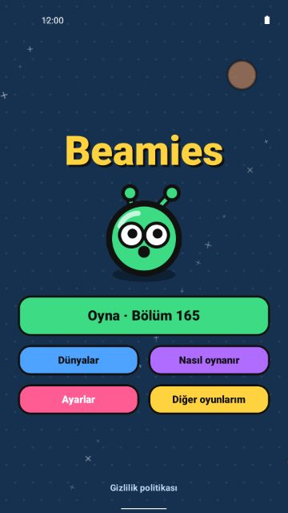
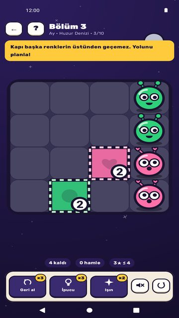
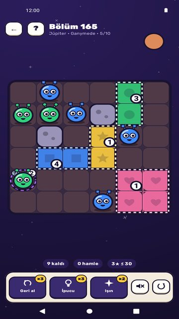
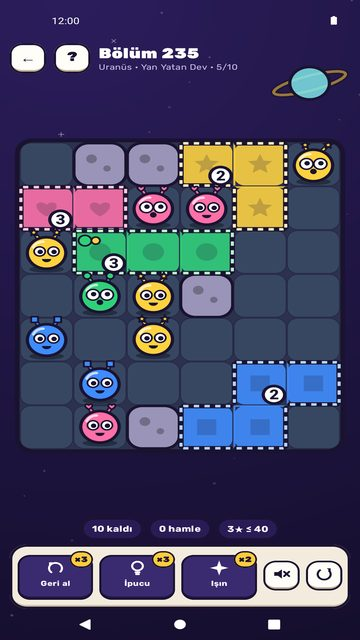
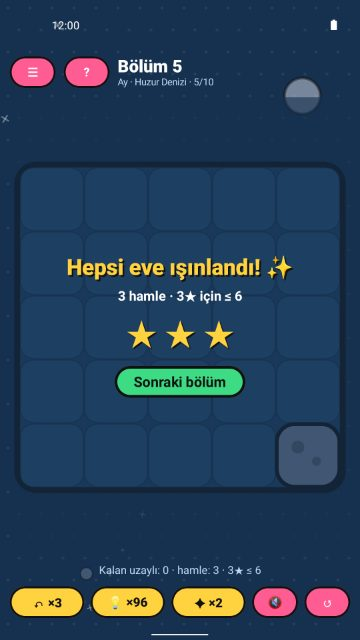
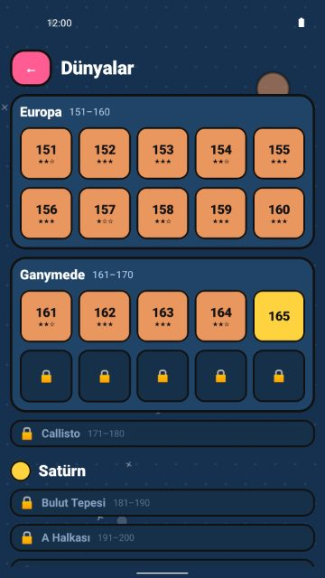
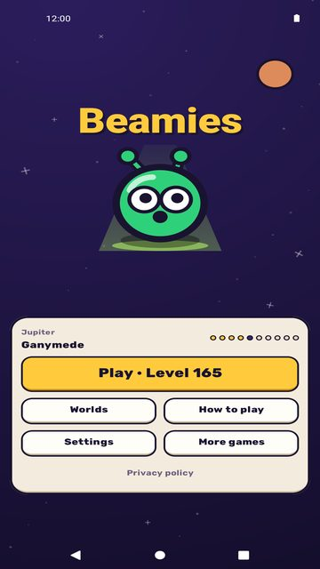
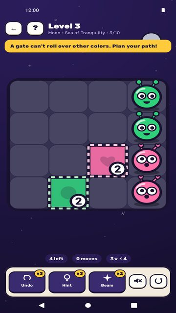
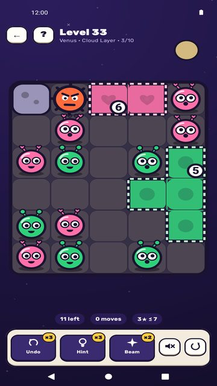
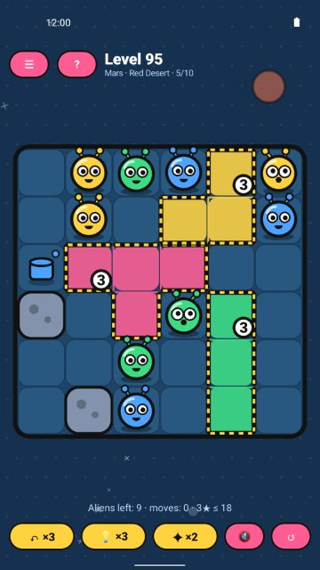
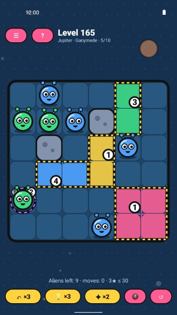
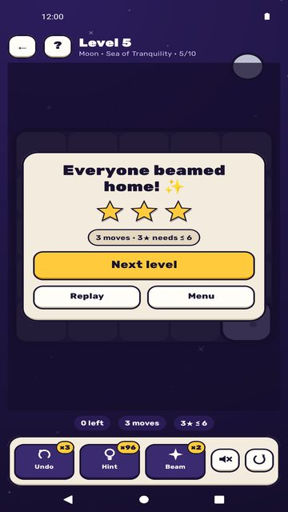
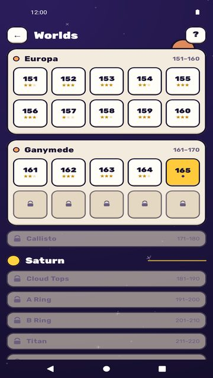
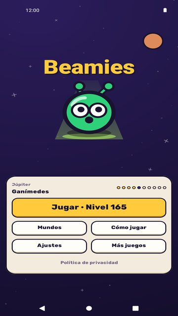
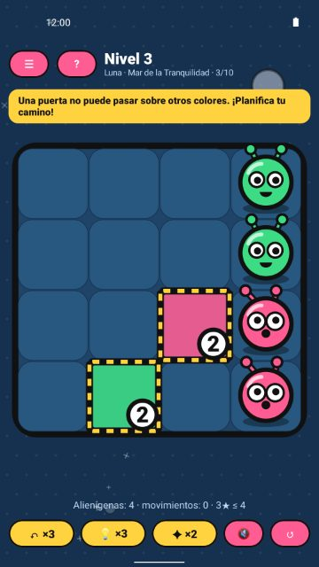
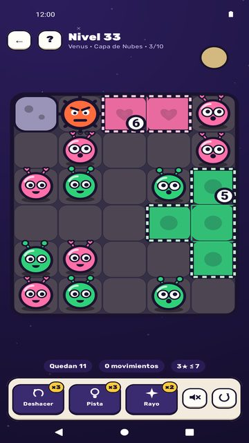
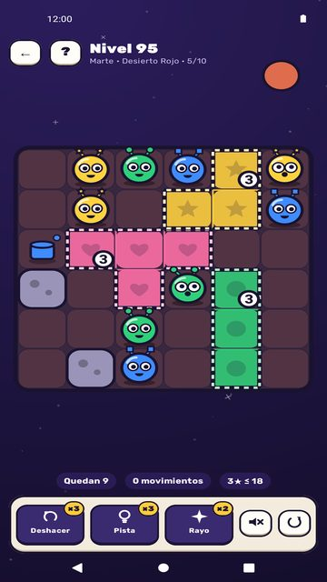
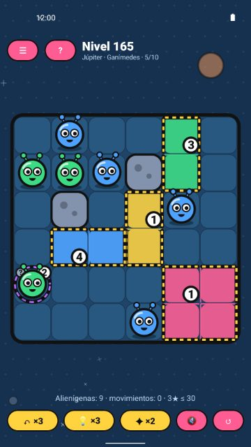
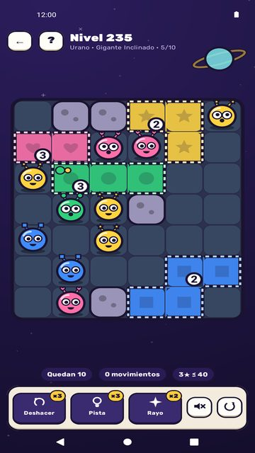
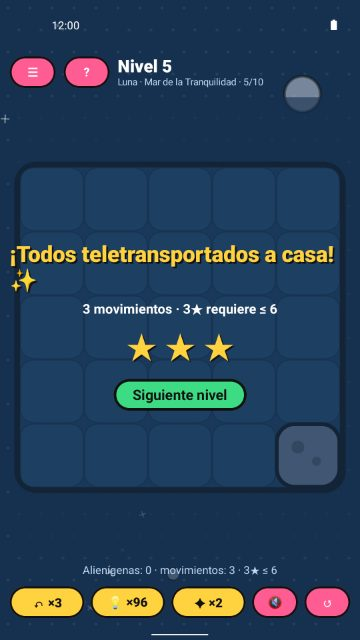
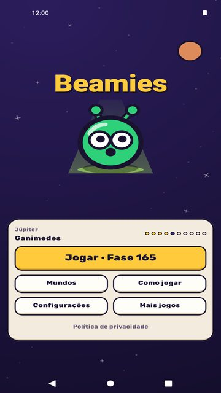
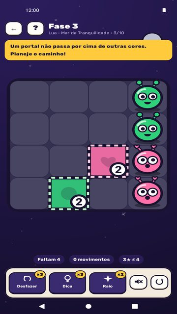
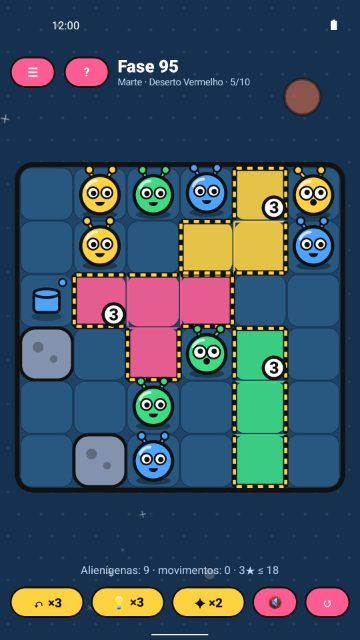
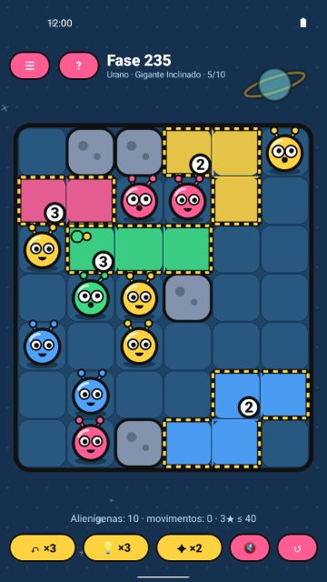
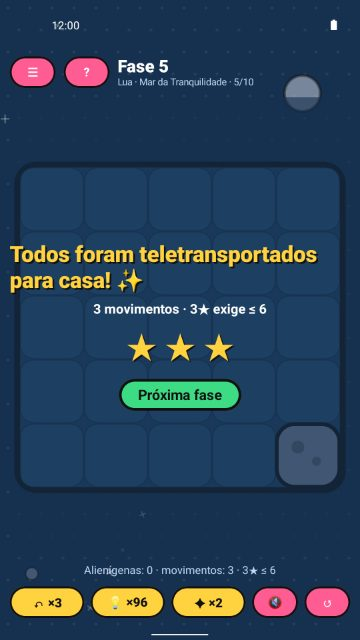
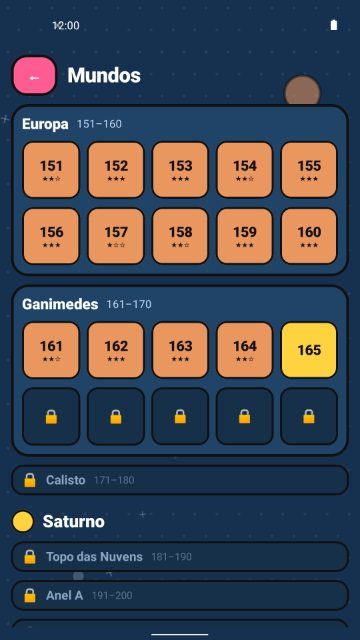
ÖzelliklerFeaturesCaracterísticasRecursos
Ay'dan Galaksi'ye 10 dünya ve 40 isimli bölgede 400 bölüm. Her bölüm üretilir ve test edilir, yani her zaman çözülebilir400 levels across 10 worlds, from the Moon to the Galaxy, in 40 named regions. Every level is generated and tested so it can always be solved400 niveles en 10 mundos, de la Luna a la Galaxia, repartidos en 40 regiones con nombre. Cada nivel se genera y se prueba para que siempre tenga solución400 fases em 10 mundos, da Lua à Galáxia, em 40 regiões com nome. Cada fase é gerada e testada para sempre ter solução
Öğrenmesi kolay, ustalaşması zor: birkaç bölgede bir yepyeni bir sürpriz gelirEasy to learn, tricky to master: every few regions bring a brand-new twistFácil de aprender, difícil de dominar: cada pocas regiones llega una novedadFácil de aprender, difícil de dominar: a cada poucas regiões chega uma novidade
Takıldın mı? Üç yardımcı: Geri al, İpucu ve Işın tabancası (daha fazlası için isteğe bağlı reklam izle)Stuck? Three helpers: Undo, Hint and the Beam gun (watch an optional ad to get more)¿Atascado? Tres ayudas: Deshacer, Pista y el Rayo (mira un anuncio opcional para conseguir más)Travou? Três ajudas: Desfazer, Dica e o Raio (assista a um anúncio opcional para ganhar mais)
Mükemmeliyetçiler için 3 yıldız puanı ve kombo zincirleri3-star ratings and combo chains for perfectionistsPuntuación de 3 estrellas y cadenas de combos para perfeccionistasAvaliação de 3 estrelas e sequências de combos para perfeccionistas
Süre yok, can yok, baskı yok. Çevrimdışı oynanır, hesap gerekmezNo timer, no lives, no pressure. Plays offline, no account neededSin temporizador, sin vidas, sin presión. Funciona sin conexión y sin cuentaSem cronômetro, sem vidas, sem pressão. Funciona offline e sem conta
Sevimli, ifadeli uzaylılar, canlı animasyonlar, neşeli sesler ve titreşim (kapatabilirsin)Cute, expressive aliens, bouncy animations, cheerful sounds and vibration (you can turn them off)Alienígenas adorables y expresivos, animaciones divertidas, sonidos alegres y vibración (puedes desactivarlos)Alienígenas fofos e expressivos, animações divertidas, sons alegres e vibração (você pode desativar)
Reklamlar seyrek: ilk 10 bölümde hiç yok, yardımcı reklamlar da her zaman isteğe bağlıAds are kept rare: none in the first 10 levels, and the helper ads are always optionalLos anuncios son escasos: ninguno en los 10 primeros niveles y los de las ayudas siempre son opcionalesOs anúncios são raros: nenhum nas 10 primeiras fases e os das ajudas são sempre opcionais
Google Play Games ile rozetler topla, liderlik tablolarında yükselCollect badges and climb the leaderboards with Google Play GamesConsigue logros y sube en las clasificaciones con Google Play JuegosGanhe conquistas e suba nos placares com o Google Play Games
Hiç reklam istemiyor musun? Tek seferlik, isteğe bağlı bir satın alma reklamları kalıcı olarak kaldırırPrefer no ads at all? One optional purchase removes them for good¿Prefieres cero anuncios? Una compra opcional los quita para siemprePrefere zero anúncios? Uma compra opcional remove todos para sempre
– Sen hareket ettikçe ilerleyen devriye asteroitleri
– Yalnız tek çizgi boyunca kayan kilitli kapılar
– Kapının rengini değiştiren boya kovaları
– Yeni uzaylılar bırakan, bazen sisin içinde saklanan portallar
– İki adımda bir renk değiştiren dönen kapılar
– Her renkten uzaylıyı alan gümüş joker kapı
Yeni başlayanlar için kolay, bulmaca severler için gerçek bir zeka oyunu. Hepsini eve ışınlayabilecek misin?– Patrolling asteroids that move as you move
– Locked gates that slide along one line only
– Paint buckets that recolor your gate
– Portals that release new aliens, sometimes hidden in fog
– Spinning gates that change color every two steps
– A silver joker gate that takes any color
Easy for newcomers, a proper brain-teaser for puzzle fans. Can you beam them all home?– Asteroides patrulla que se mueven cuando tú te mueves
– Puertas bloqueadas que solo se deslizan por una línea
– Cubos de pintura que cambian el color de tu puerta
– Portales que sueltan nuevos alienígenas, a veces ocultos en la niebla
– Puertas giratorias que cambian de color cada dos pasos
– Una puerta comodín plateada que admite cualquier color
Fácil para quien empieza, un buen rompecabezas para los fans. ¿Podrás llevarlos a todos a casa?– Asteroides patrulha que se movem quando você se move
– Portais travados que só deslizam em uma linha
– Baldes de tinta que mudam a cor do seu portal
– Portais que soltam novos alienígenas, às vezes escondidos na névoa
– Portais giratórios que mudam de cor a cada dois passos
– Um portal curinga prateado que aceita qualquer cor
Fácil para quem está começando, um quebra-cabeça de verdade para os fãs. Você consegue levar todos para casa?